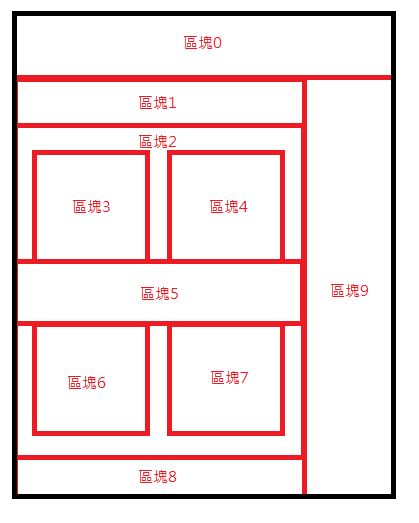

前言
CSS是控制呈現在網頁中元素的技術，好比HTML是骨架，而CSS就是皮膚，而透過CSS的樣式調整可以將網頁的區塊任意改變，以下圖示為例，利用CSS將區塊拼湊成一個網頁，用以呈現給使用者。
CSS與UI/UX息息相關，在網頁中如何不使用文字透過CSS呈現樣式也可以讓使用者了解含意是一條每位網頁設計師必修之路。
CSS使用說明
在網頁中有許多種方式可以對元素進行樣式設定，以下舉出最常見的三種設定style方式
- <h4 style="color: blue; font-size:30px">我是第一段測試文字</h4>
<style> .test_text01{ color: yellowgreen; font-size:30px; } </style>
後，在任意位置輸入<p class="test_text01">我是第二段測試文字</p><script> let test_text02 = document.getElementById('test_text02') test_text02.style.fontSize = '30px' test_text02.style.color = 'cyan' </script>
後在前面的任意位置輸入<p id="test_text02">我是第三段測試文字</p>
網頁中會呈現
我是第一段測試文字
在網頁中任意位置(建議在head標籤內寫入)網頁中會呈現
我是第二段測試文字
在網頁的底部(</body>)前寫入網頁中會呈現
我是第三段測試文字
以上是常見設定style樣式的方式，一般而言網站會採用第二種方式去掉頭尾標籤獨立製作檔案，新增資料夾命名為css後放入，其css副檔名必須為.css，在head標籤中使用<link rel="stylesheet" href="css位置">導入樣式。
css在設定中會有權重問題，一般而言css的權重是由以下由小至大做排序，設定重複的樣式會已權重越大為優先覆蓋。
class > id > 標籤內直接輸入style控制 > !important
其中important的權重是最大的，任何在屬性後方加上!important就會蓋過其他地方設置的屬性，因此若非必要盡量避免使用該參數。